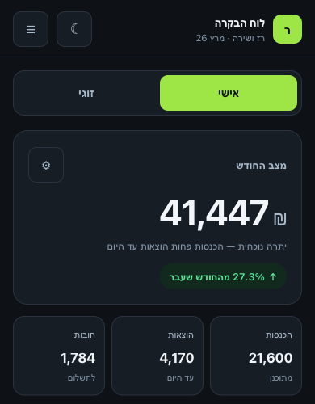
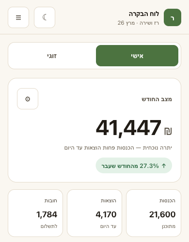

אותו מסך, אותם נתונים, אותה פריסה. שונה רק בלוק הטוקנים.

רקע פחם, אקסנט ליים, מספרים בולטים. נראה כמו כלי. קר יותר.

הפלטה שכבר קיימת באפליקציה — מתוקנת. ממשיך את הזהות הנוכחית.
אותו סקריפט שמדד את האפליקציה החיה, על 390×844.
| מדד | היום | א׳ | ב׳ |
|---|---|---|---|
| כשלי ניגודיות | 18 · 6 | 0 | 0 |
| היחס הנמוך | 2.22 | 5.64 | 5.43 |
| יעדי מגע קטנים | 11/32 | 0/11 | 0/11 |
| פקדים ללא שם | 4 | 0 | 0 |